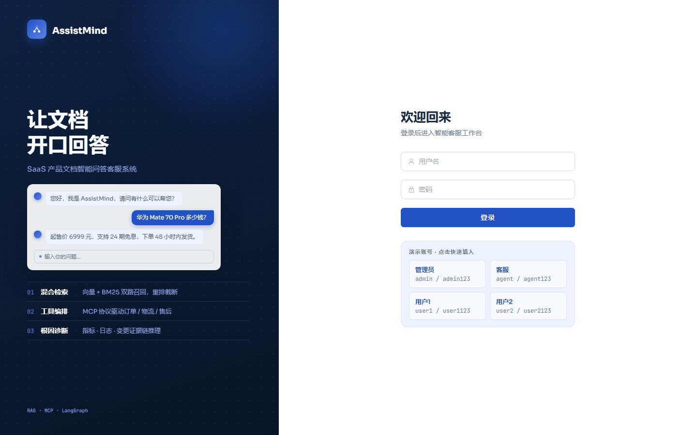
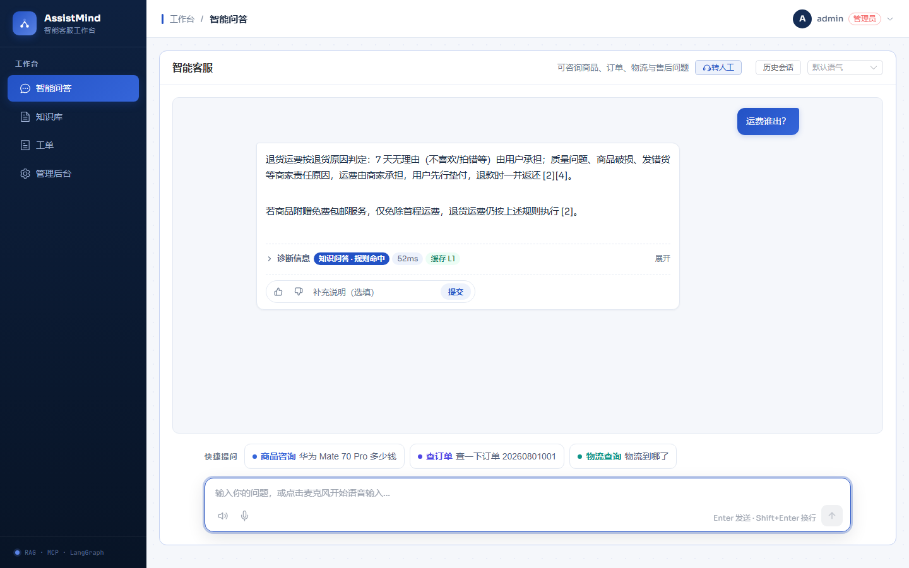
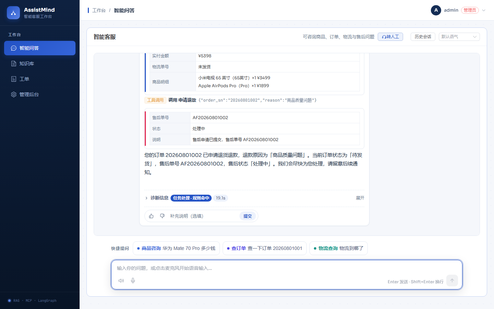
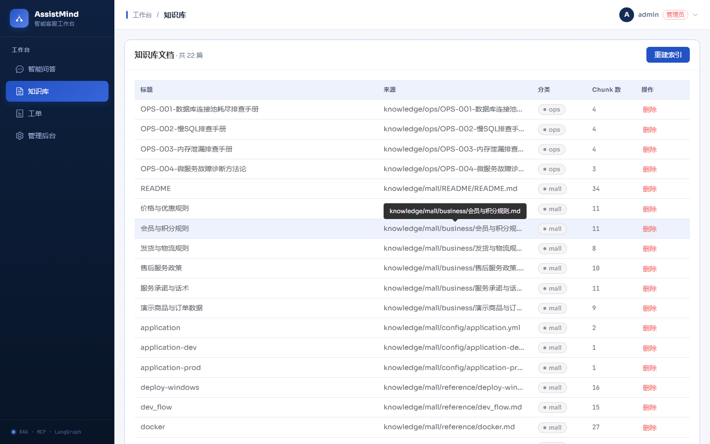
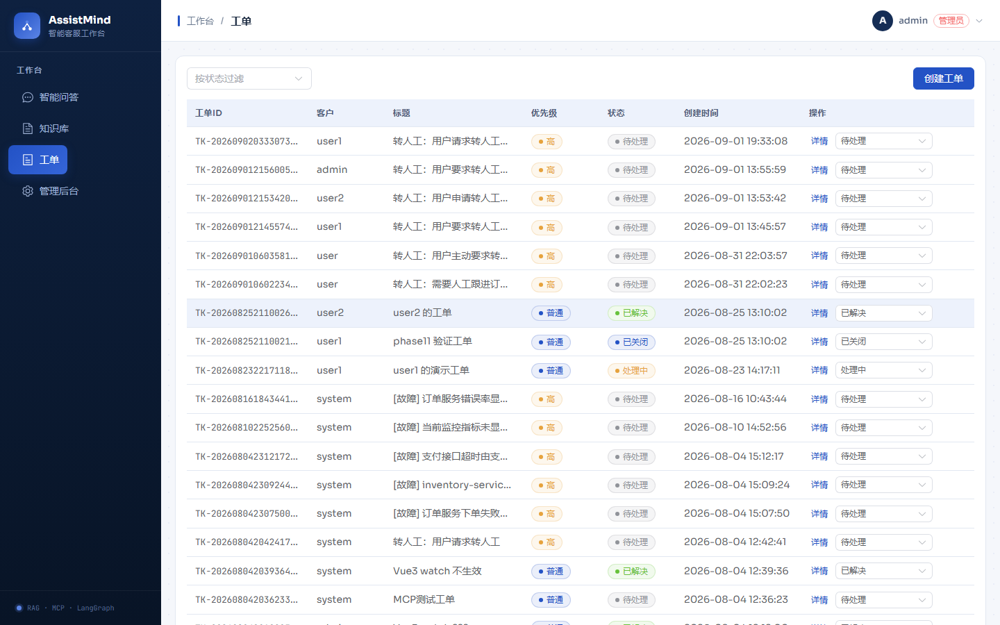
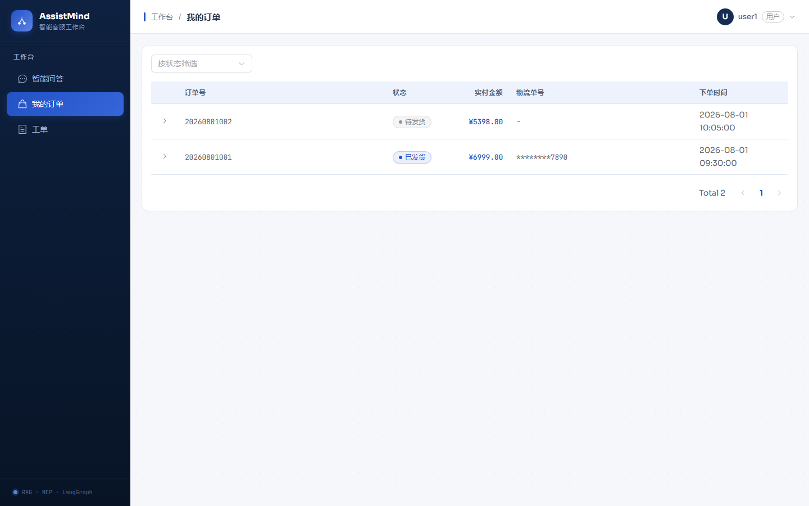
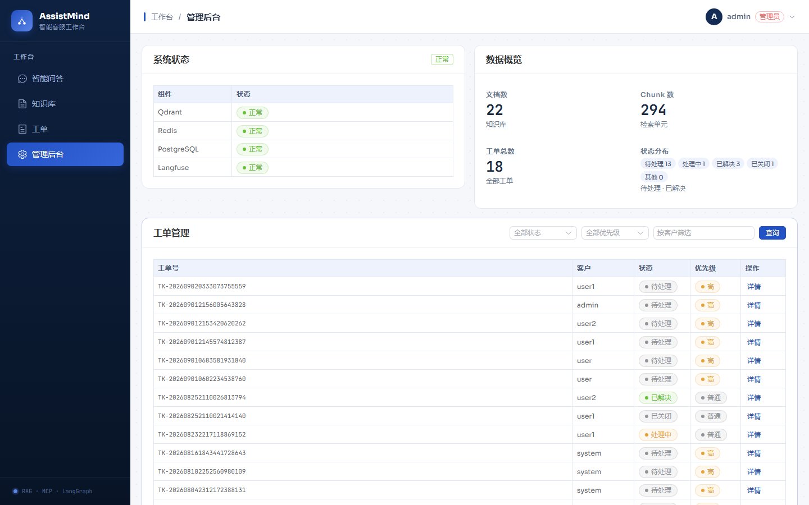
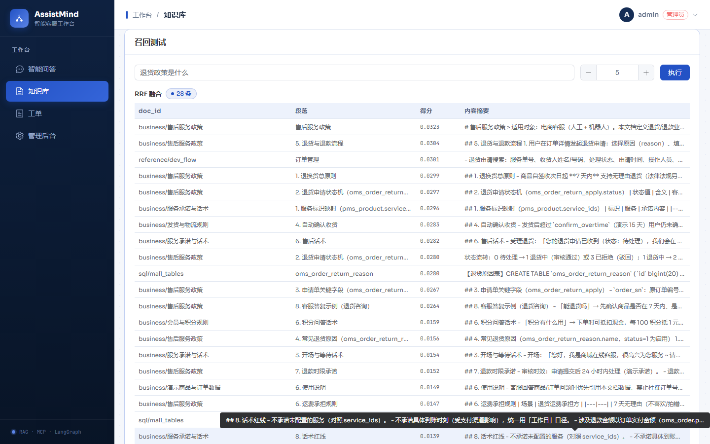

共 8 张截图 · 本地演示环境真实画面（1440×900）· 更新于 2026-09-12（知识库管理 P0+P1 上线后）
04-knowledge.png 重截为新版 UI（上传按钮 / 参与检索开关 / 详情 / 重新灌库），
并新增 08-recall-test.png（召回测试 RRF 融合命中结果）。README 界面预览小节已同步改为 8 图布局。

左侧品牌区 + 右侧登录表单，演示账号快捷填入卡片齐全。

「运费谁出？」命中知识问答规则，52ms 返回且带「缓存 L1」标记，含引用编号与反馈条。

工具调用「申请售后」参数 → 售后单卡片（AF20260801002，处理中）→ 最终答复，诊断 19.1s。

新版 UI：24 篇文档；卡片头部「重建索引 + 上传文档」；新增「参与检索」启停开关列 与「详情 / 重新灌库 / 删除」操作列——P0/P1 全部管理能力入口在图内可见。

状态过滤、优先级、多状态徽标齐全，含故障类工单。

演示账号 user1 的订单（待发货 / 已发货），物流单号脱敏显示。

系统状态四组件全部正常（Qdrant/Redis/PostgreSQL/Langfuse），数据概览与工单管理联动。

「退货政策是什么」→ RRF 融合 28 条命中：doc_id / 段落标题 / 得分 / 内容摘要四列， 毫秒级 dry-run 验证知识库检索效果（不含改写 / CRAG / 重排 / 生成）。